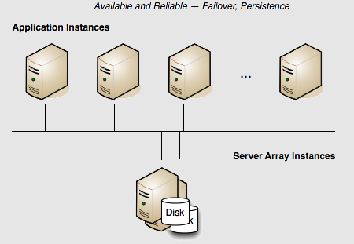

Terracotta Cluster with High Availability
Persistence: Yes | Failover: Yes | Scale: No
The example above presents a reliable but not highly available cluster. If the server fails, the cluster fails. There is no redundancy to provide failover. Adding a mirror server adds availability because the mirror serves as a "hot standby" ready to take over for the active server in case of a failure.
In this array, if the active Terracotta server instance fails, then the mirror instantly takes over and the cluster continues functioning. No data is lost.
The following Terracotta configuration file demonstrates how to configure this two-server array:
<?xml version="1.0" encoding="UTF-8" ?>
<tc:tc-config xmlns:tc="http://www.terracotta.org/config"
xmlns:xsi="http://www.w3.org/2001/XMLSchema-instance"
xsi:schemaLocation="http://www.terracotta.org/schema/terracotta-9.xsd">
<servers>
<server name="Server1">
<data>/opt/terracotta/server1-data</data>
<tsa-port>9510</tsa-port>
<jmx-port>9520</jmx-port>
<tsa-group-port>9530</tsa-group-port>
<management-port>9540</management-port>
<dataStorage size="4g">
<offheap size="4g"/>
</dataStorage>
</server>
<server name="Server2">
<data>/opt/terracotta/server2-data</data>
<tsa-port>9510</tsa-port>
<jmx-port>9520</jmx-port>
<tsa-group-port>9530</tsa-group-port>
<management-port>9540</management-port>
<dataStorage size="4g">
<offheap size="4g"/>
</dataStorage>
</server>
<restartable enabled="true"/>
<client-reconnect-window>120</client-reconnect-window>
</servers>
...
</tc:tc-config>
You can add more mirror servers to this configuration by adding more <server> sections. However, a performance overhead may become evident when adding more mirror servers due to the load placed on the active server by having to synchronize with each mirror.
Note: | Terracotta server instances must not share data directories. Each server's <data> element should point to a different and preferably local data directory. |
Starting the Servers
How server instances behave at startup depends on when in the life of the cluster they are started.
In a single-server configuration, when the server is started it performs a startup routine and then is ready to run the cluster (ACTIVE status). If multiple server instances are started at the same time, one is elected the active server (ACTIVE-COORDINATOR status) while the others serve as mirrors (PASSIVE-STANDBY status). The election is recorded in the servers' logs.
If a server instance is started while an active server instance is already running, it syncs up state from the active server instance before becoming a mirror. The active and mirror servers must always be synchronized, allowing the mirror server to mirror the state of the active. The mirror server goes through the following states:
1. PASSIVE-UNINITIALIZED - The mirror is beginning its startup sequence and is not ready to perform failover should the active fail or be shut down. The server's status light in the Terracotta Management Console (TMC) switches from red to orange.
2. INITIALIZING - The mirror is synchronizing state with the active and is not ready to perform failover should the active fail or be shut down. The server's status light in the TMC is orange.
3. PASSIVE-STANDBY - The mirror is synchronized and is ready to perform failover should the active server fail or be shut down. The server's status light in the TMC switches from orange to cyan.
The active server instance carries the load of sending state to the mirror during the synchronization process. The time taken to synchronize is dependent on the amount of clustered data and on the current load on the cluster. The active server instance and mirrors should be run on similarly configured machines for better throughput, and should be started together to avoid unnecessary sync ups.
The sequence in which servers startup does not affect data. Even if a former mirror server is initialized before the former active server, the mirror server's data is not erased. In the event that a mirror server went offline while the active server was still up, then when the mirror server returns, it remembers that it was in the mirror role. Even if the active server is offline at that point, the mirror server does not try to become the active. It waits until the active server returns, and clients are blocked from updating their data. When the active returns, it will restart the mirror. The mirror's data objects and indices are then moved to the dirty-objectdb-backup directory, and the active syncs its data with the mirror.
Failover
If the active server instance fails and two or more mirror server instances are available, an election determines the new active. Successful failover to a new active takes place only if at least one mirror server is fully synchronized with the failed active server; successful client failover (migration to the new active) can happen only if the server failover is successful. Shutting down the active server before a fully-synchronized mirror is available can result in a cluster-wide failure.
If the dataStorage and/or offheap size on the mirror server is smaller than on the active server, then the mirror server will fail to start and the user will be alerted that the configuration is invalid. If there are multiple mirrors with differing amounts of storage configured, then the passive with the smallest dataStorage and offheap sizes (that are still greater than or equal to the active's dataStorage and offheap sizes) will be elected to be the new active.
Tip: | Hot-Swapping Mirrors - A mirror can be hot-swapped if the replacement matches the original mirror's <server> block in the Terracotta configuration. For example, the new mirror should use the same host name or IP address configured for the original mirror. For information about swapping in a mirror with a different configuration, refer to Changing Topology of a Live Cluster. |
Terracotta server instances acting as mirrors can run either in restartable mode or non-persistent mode. If a server instance running in restartable mode goes down, and a mirror takes over, the crashed server's data directory is cleared before it is restarted and allowed to rejoin the cluster. Removing the data is necessary because the cluster state could have changed since the crash. During startup, the restarted server's new state is synchronized from the new active server instance.
If both servers are down, and clustered data is persisted, the last server to be active will automatically be started first to avoid errors and data loss.
In setups where data is not persisted, meaning that restartable mode is not enabled, then no data is saved and either server can be started first.
A Safe Failover Procedure
To safely migrate clients to a mirror server without stopping the cluster, follow these steps:
1. If it is not already running, start the mirror server using the start-tc-server script. The mirror server must already be configured in the Terracotta configuration file.
2. Ensure that the mirror server is ready for failover (PASSIVE-STANDBY status). In the TMC, the status light will be cyan.
3. Shut down the active server using the stop-tc-server script.
Note: | If the script detects that the mirror server in STANDBY state isn't reachable, it issues a warning and fails to shut down the active server. If failover is not a concern, you can override this behavior with the --force flag. |
Clients will connect to the new active server.
4. Restart any clients that fail to reconnect to the new active server within the configured reconnection window.
The previously active server can now rejoin the cluster as a mirror server. If restartable mode had been enabled, its data is first removed and then the current data is read in from the now active server.
A Safe Cluster Shutdown Procedure
A safe cluster shutdown should follow these steps:
1. Shut down the mirror servers using the stop-tc-server script.
2. Shut down the clients. The Terracotta client will shut down when you shut down your application.
3. Shut down the active server using the stop-tc-server script.
To restart the cluster, first start the server that was last active. If clustered data is not persisted, any of the servers could be started first as no data conflicts can take place.
Split Brain Scenario
In a Terracotta cluster, "split brain" refers to a scenario where two servers assume the role of active server (ACTIVE-COORDINATOR status). This can occur during a network problem that disconnects the active and mirror servers, causing the mirror to both become an active server and open a reconnection window for clients (<client-reconnect-window>).
If the connection between the two servers is never restored, then two independent clusters are in operation. This is a split-brain situation. However, if the connection is restored, one of the following scenarios results:

No clients connect to the new active server - The original active server "zaps" the new active server, causing it to restart, wipe its database, and synchronize again as a mirror.
A minority of clients connect to the new active server - The original active server starts a reconnect timeout for the clients that it loses, while zapping the new active server. The new active restarts, wipes its database, and synchronizes again as a mirror. Clients that defected to the new active attempt to reconnect to the original active, but if they do not succeed within the parameters set by that server, they must be restarted.
A majority of clients connects to the new active server - The new active server "zaps" the original active server. The original active restarts, wipes its database, and synchronizes again as a mirror. Clients that do not connect to the new active within its configured reconnection window must be restarted.
An equal number of clients connect to the new active server - In this unlikely event, exactly one half of the original active server's clients connect to the new active server. The servers must now attempt to determine which of them holds the latest transactions (or has the freshest data). The winner zaps the loser, and clients behave as noted above, depending on which server remains active. Manual shutdown of one of the servers may become necessary if a timely resolution does not occur.
In the case of split-brain occurrences it is imperative to confirm the integrity of shared data after such an event.